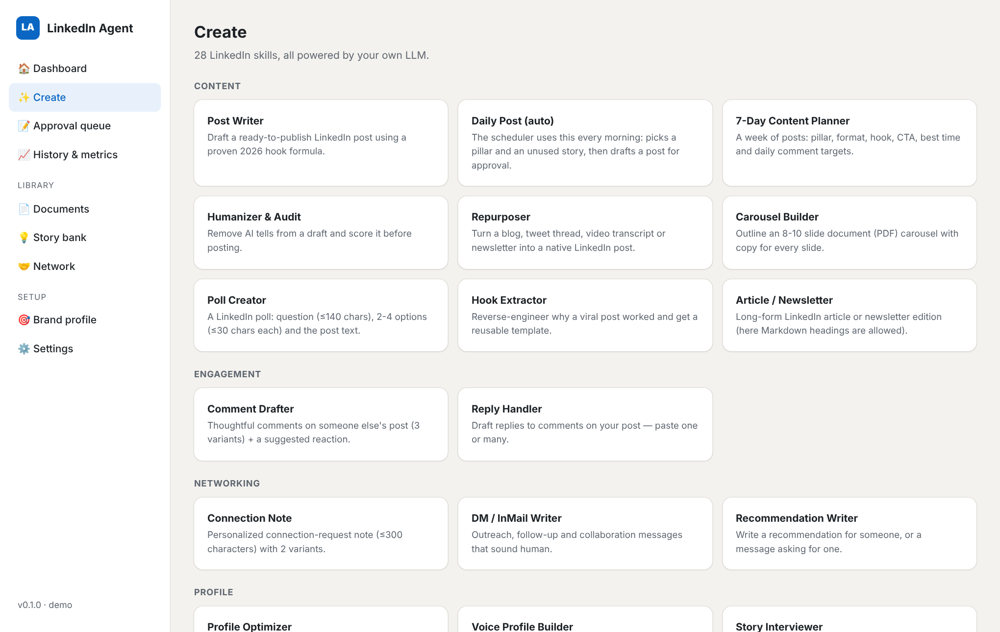
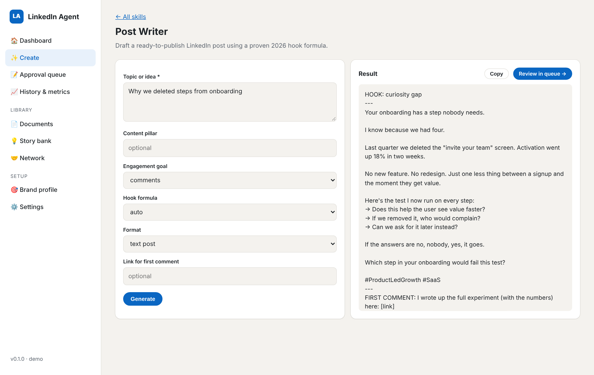
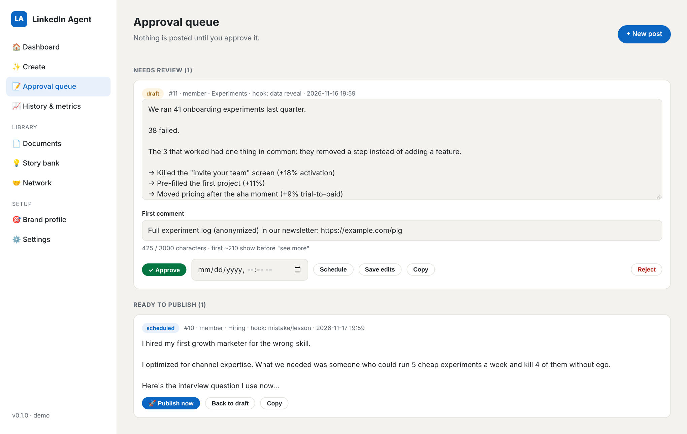
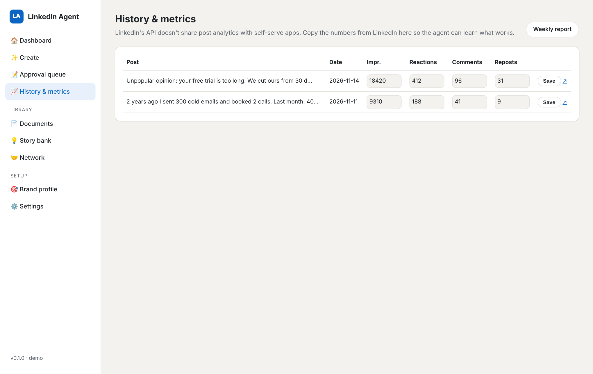
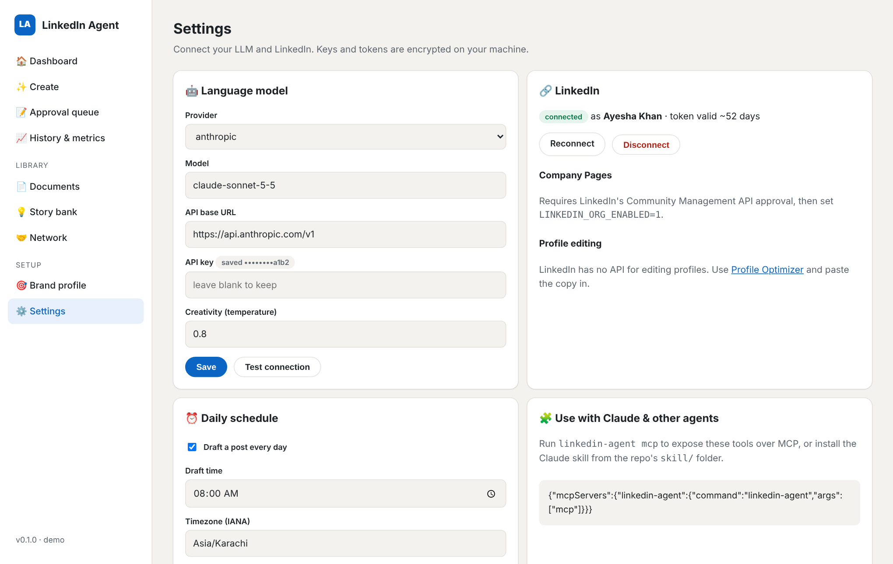

Web portal
A local web app at http://localhost:8787. Light and dark mode, mobile friendly. Open the live demo to click around with sample data.
Dashboard
Drafts waiting, approved/scheduled and published counts, engagement rate, a setup checklist, today's schedule, and one-click Draft today's post.

Create
All 28 skills, grouped by category. Each opens a form generated from the skill registry.

Post Writer
Pick a topic, goal, hook formula and format. The result lands in the approval queue with its first comment.

Approval queue
Edit inline with a live character count, approve, schedule for a date and time, or reject. Approved posts get Publish now.

History & metrics
Published posts with links. Enter impressions, reactions, comments and reposts so the weekly report and daily planner learn what works.

Settings
Choose an LLM provider and model, connect or disconnect LinkedIn, enable Company Pages, set the daily schedule, and copy the MCP config.

Library screens
- Documents: resumes, cover letters, profile rewrites and plans. Copy or download as .docx.
- Story bank: real experiences the agent draws from, so it doesn't invent.
- Network: a mini CRM with follow-up dates, plus quick links to the Connection Note and DM writers.
- Brand profile: your voice, audience, pillars, sample posts and profile text.